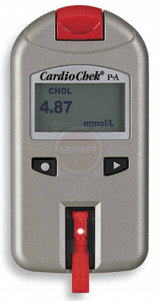

Analizador multiparamétrico en sangre 
Modelo CardioChek PA 1708

DESCRIPCIÓN:
Analizador portátil CardioChek para determinación multiparamétrica de valores en sangre.
Para análisis de tiras reactivas: perfil lipídico, panel CHOL + HDL + GLU, panel metabólico, CHOL + GLU, CHOL + HD, colesterol total, colesterol HDL, triglicéridos, glucosa, cetona y creatinina.
Presentación de las tiras: 15/25 tiras por vial dependiendo el analito.
ESPECIFICACIONES TÉCNICAS:
Almacenamiento: Temperatura ambiente 20-30°C.
Resultados: En 90 segundos, excepto creatinina (8 minutos).
Volumen de muestra: 20 a 40 µl, dependiendo la tira.
Tipo de muestra: Venosa o capilar.
Alimentación: Baterías incluidas 2 AAA.
Registro: 0946E2016 SSA
DATOS COMPLEMENTARIOS: Si desea obtener más información, favor de contactar a:
ECOMED, S.A. DE C.V.
Tels.: CDMX: (55) 5698-6747, 7699-9948
Tel. Chihuahua (matriz): (614) 423-4500
Lada sin costo: 01 800-633-4225
e-mail: info@detecto.mx
www.ecomed.mx